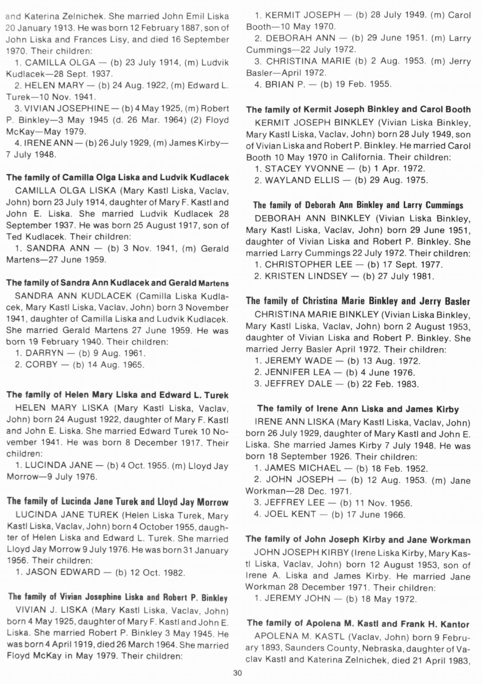

The book · The Family of John Kastl
Page 30 The family of Camilla Olga Liska and Ludvik Kudlacek


Transcription
and Katerina Zelnichek. She married John Emil Liska 20 January 1913. He was born 12 February 1887, son of John Liska and Frances Lisy, and died 16 September 1970. Their children:
- CAMILLA OLGA — (b) 23 July 1914, (m) Ludvik Kudlacek—28 Sept. 1937.
- HELEN MARY — (b) 24 Aug. 1922, (m) Edward L. Turek—10 Nov. 1941.
- VIVIAN JOSEPHINE — (b) 4 May 1925, (m) Robert P. Binkley—3 May 1945 (d. 26 Mar. 1964) (2) Floyd McKay—May 1979.
- IRENE ANN — (b) 26 July 1929, (m) James Kirby—7 July 1948.
The family of Camilla Olga Liska and Ludvik Kudlacek
CAMILLA OLGA LISKA (Mary Kastl Liska, Vaclav, John) born 23 July 1914, daughter of Mary F. Kastl and John E. Liska. She married Ludvik Kudlacek 28 September 1937. He was born 25 August 1917, son of Ted Kudlacek. Their children:
- SANDRA ANN — (b) 3 Nov. 1941, (m) Gerald Martens—27 June 1959.
The family of Sandra Ann Kudlacek and Gerald Martens
SANDRA ANN KUDLACEK (Camilla Liska Kudlacek, Mary Kastl Liska, Vaclav, John) born 3 November 1941, daughter of Camilla Liska and Ludvik Kudlacek. She married Gerald Martens 27 June 1959. He was born 19 February 1940. Their children:
- DARRYN — (b) 9 Aug. 1961.
- CORBY — (b) 14 Aug. 1965.
The family of Helen Mary Liska and Edward L. Turek
HELEN MARY LISKA (Mary Kastl Liska, Vaclav, John) born 24 August 1922, daughter of Mary F. Kastl and John E. Liska. She married Edward Turek 10 November 1941. He was born 8 December 1917. Their children:
- LUCINDA JANE — (b) 4 Oct. 1955. (m) Lloyd Jay Morrow—9 July 1976.
The family of Lucinda Jane Turek and Lloyd Jay Morrow
LUCINDA JANE TUREK (Helen Liska Turek, Mary Kastl Liska, Vaclav, John) born 4 October 1955, daughter of Helen Liska and Edward L. Turek. She married Lloyd Jay Morrow 9 July 1976. He was born 31 January 1956. Their children:
- JASON EDWARD — (b) 12 Oct. 1982.
The family of Vivian Josephine Liska and Robert P. Binkley
VIVIAN J. LISKA (Mary Kastl Liska, Vaclav, John) born 4 May 1925, daughter of Mary F. Kastl and John E. Liska. She married Robert P. Binkley 3 May 1945. He was born 4 April 1919, died 26 March 1964. She married Floyd McKay in May 1979. Their children:
- KERMIT JOSEPH — (b) 28 July 1949. (m) Carol Booth—10 May 1970.
- DEBORAH ANN — (b) 29 June 1951. (m) Larry Cummings—22 July 1972.
- CHRISTINA MARIE (b) 2 Aug. 1953. (m) Jerry Basler—April 1972.
- BRIAN P. — (b) 19 Feb. 1955.
The family of Kermit Joseph Binkley and Carol Booth
KERMIT JOSEPH BINKLEY (Vivian Liska Binkley, Mary Kastl Liska, Vaclav, John) born 28 July 1949, son of Vivian Liska and Robert P. Binkley. He married Carol Booth 10 May 1970 in California. Their children:
- STACEY YVONNE — (b) 1 Apr. 1972.
- WAYLAND ELLIS — (b) 29 Aug. 1975.
The family of Deborah Ann Binkley and Larry Cummings
DEBORAH ANN BINKLEY (Vivian Liska Binkley, Mary Kastl Liska, Vaclav, John) born 29 June 1951, daughter of Vivian Liska and Robert P. Binkley. She married Larry Cummings 22 July 1972. Their children:
- CHRISTOPHER LEE — (b) 17 Sept. 1977.
- KRISTEN LINDSEY — (b) 27 July 1981.
The family of Christina Marie Binkley and Jerry Basler
CHRISTINA MARIE BINKLEY (Vivian Liska Binkley, Mary Kastl Liska, Vaclav, John) born 2 August 1953, daughter of Vivian Liska and Robert P. Binkley. She married Jerry Basler April 1972. Their children:
- JEREMY WADE — (b) 13 Aug. 1972.
- JENNIFER LEA — (b) 4 June 1976.
- JEFFREY DALE — (b) 22 Feb. 1983.
The family of Irene Ann Liska and James Kirby
IRENE ANN LISKA (Mary Kastl Liska, Vaclav, John) born 26 July 1929, daughter of Mary Kastl and John E. Liska. She married James Kirby 7 July 1948. He was born 18 September 1926. Their children:
- JAMES MICHAEL — (b) 18 Feb. 1952.
- JOHN JOSEPH — (b) 12 Aug. 1953. (m) Jane Workman—28 Dec. 1971.
- JEFFREY LEE — (b) 11 Nov. 1956.
- JOEL KENT — (b) 17 June 1966.
The family of John Joseph Kirby and Jane Workman
JOHN JOSEPH KIRBY (Irene Liska Kirby, Mary Kastl Liska, Vaclav, John) born 12 August 1953, son of Irene A. Liska and James Kirby. He married Jane Workman 28 December 1971. Their children:
- JEREMY JOHN — (b) 18 May 1972.
The family of Apolena M. Kastl and Frank H. Kantor
APOLENA M. KASTL (Vaclav, John) born 9 February 1893, Saunders County, Nebraska, daughter of Vaclav Kastl and Katerina Zelnichek, died 21 April 1983,
People from the line of descent on this page
- Mary Frances Kastl b. 1891
- Apolena M. Kastl 1893–1983
- John Emil Liska 1887–1970
- Camilla Olga Liska b. 1914
- Helen Mary Liska b. 1922
- Vivian Josephine Liska b. 1925
- Irene Ann Liska b. 1929
- Ludvik Kudlacek b. 1917
- Sandra Ann Kudlacek b. 1941
- Gerald Martens b. 1940
- Darryn Martens b. 1961
- Corby Martens b. 1965
- Edward L. Turek b. 1917
- Lucinda Jane Turek b. 1955
- Lloyd Jay Morrow b. 1956
- Jason Edward Morrow b. 1982
- Robert P. Binkley 1919–1964
- Kermit Joseph Binkley b. 1949
- Deborah Ann Binkley b. 1951
- Christina Marie Binkley b. 1953
- Brian P. Binkley b. 1955
- Stacey Yvonne Binkley b. 1972
- Wayland Ellis Binkley b. 1975
- Christopher Lee Cummings b. 1977
- Kristen Lindsey Cummings b. 1981
- Jeremy Wade Basler b. 1972
- Jennifer Lea Basler b. 1976
- Jeffrey Dale Basler b. 1983
- James Kirby b. 1926
- James Michael Kirby b. 1952
- John Joseph Kirby b. 1953
- Jeffrey Lee Kirby b. 1956
- Joel Kent Kirby b. 1966
- Jeremy John Kirby b. 1972
Transcriber’s notes
Two columns. The left column ends with the Vivian Josephine Liska and Robert P. Binkley paragraph ('Their children:'); her children list starts at the top of the right column. Child 3 CHRISTINA MARIE has no dash before (b) in the print. Some family headings are set in a condensed bold face.